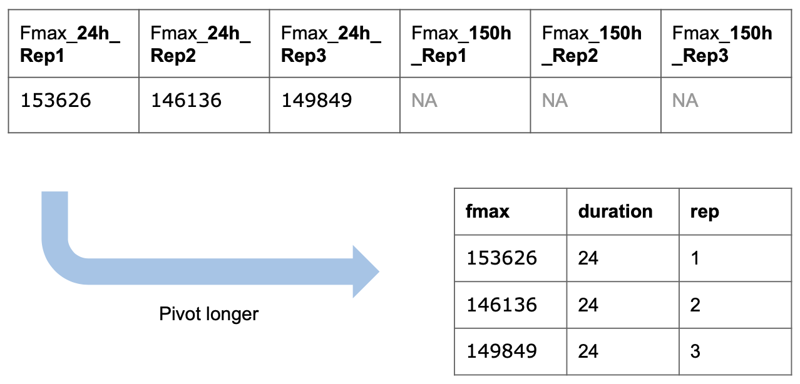
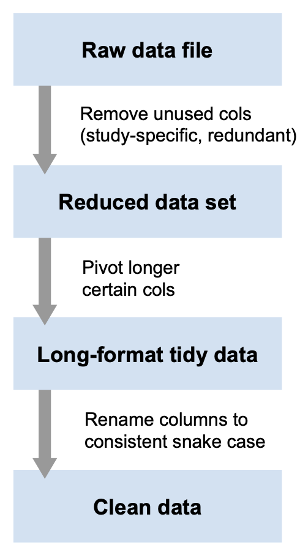
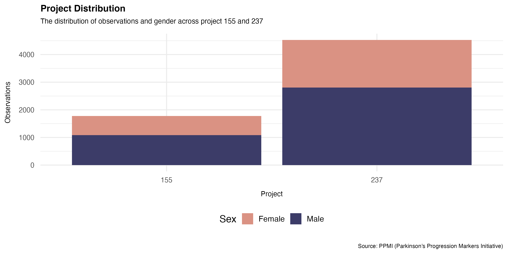
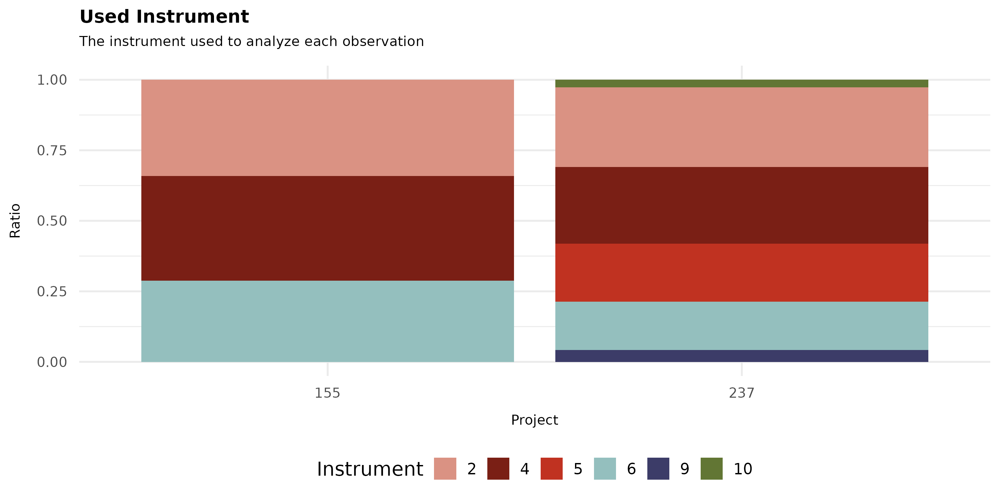
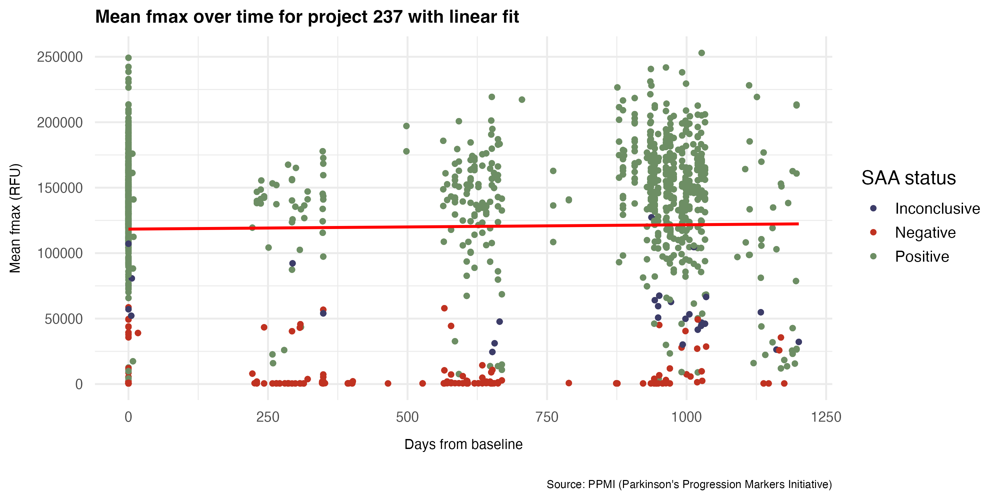
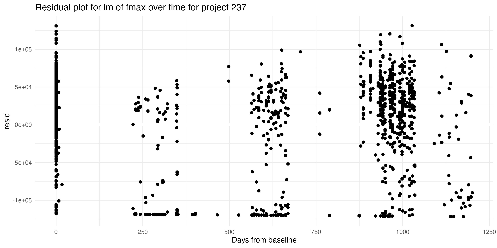

SAA Analysis from PPMI Projects 155 & 237
2025-12-02
Presynaptic neuronal protein alpha-Synuclein
Aggregation between nerve cells -> inhibition of transmission
2 Projects using SAA (α-synuclein seed amplification assays)
General focus:
Does one of the methods perform better than the other, and which is one more efficient?
Materials:
PPMI (Parkinson’s Progression Markers Initiative) database
3 replicates of SAA (cerebrospinal fluid)
Monitors the aggregation by measuring fluorescence intensity over time
Sigmoidal curve: fmax, auc, ttt
Set of critera for positive/negative/inconclusive
Methods:
Tidyverse to visualize the data
Tools:
Quality check
Tidy data makes it much easier to handle
Requirements for tidy data
Each column is one variable (Not the case initially)
Each row is one observation
Each cell is one value


Days from baseline
Mean of fmax for each visit
Our own SAA_result


SAA result and SAA custom quality check
A non-mentioned criteria?
Low fmax (200–600 RFU), huge, moderate
Hard to know for sure
| Result | Project 155 |
| Positive | All replicates Fmax ≥ 5,000 RFU |
| Negative | 0 or 1 replicate Fmax ≥ 5,000 RFU |
| Inconclusive | 2 replicates Fmax ≥ 5,000 RFU |

| Project | Mean SD | Median SD | IQR |
|---|---|---|---|
| 155 | 24,066 | 22,198 | 26,131 |
| 237 | 10,386 | 5,662 | 6,470 |
Question: Does the signal become stronger further into disease progression?

Only for project 237 above
Not necessarily comparable fmax mean values
Project 155 only had close to baseline measurements
No connection
Note: Days from baseline is a not actually a measure of disease progression…


Patient variation, if any connection at all
We also looked at more patients
24-hour assay (237) vs 150-hour assay (155):
Does one of the methods perform better than the other, and which is one more efficient?
Project 237: Fast, accurate, clear separation, consistent
Healthy controls for better assessment